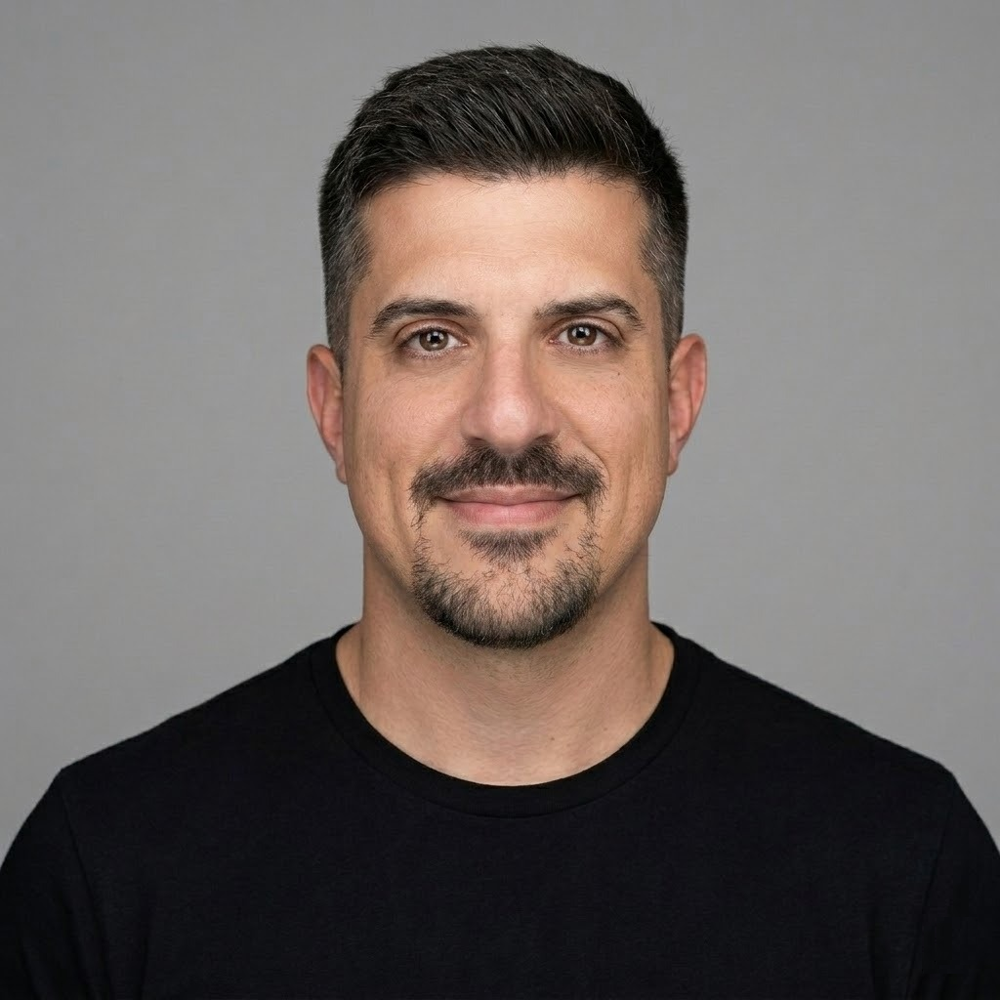

Coach, formador y consultor con más de una década guiando transformaciones ágiles reales: de la operación diaria a la estrategia, en organizaciones que van desde bancos hasta startups tecnológicas de EE. UU.
Soy Agile Coach certificado por Scrum Alliance, con más de diez años liderando y formando equipos remotos e internacionales de alto rendimiento. He guiado transformaciones ágiles completas — de estructuras heredadas a modelos operativos de producto — implementando frameworks escalados, OKRs y Flight Levels en organizaciones de distintos tamaños y sectores. Mi enfoque combina la reducción sistemática de deuda técnica con una cultura sostenida de mejora continua, siempre buscando un impacto que se sienta en los resultados y en las personas.

Juan Mello — Agile CoachDiseño e implementación de transformaciones ágiles end-to-end, desde el diagnóstico hasta la escala, incluyendo modelos operativos de producto.
Implementación de OKRs y del framework Flight Levels para conectar la estrategia con la operación diaria.
Diseño y despliegue de Scrum, Kanban y frameworks escalados (SAFe, LeSS) en múltiples equipos.
Facilitación de la relación entre equipos técnicos y stakeholders de negocio, con roadmaps claros y medibles.
Talleres oficiales de Management 3.0 y programas de certificación ágil a medida.
Mentoría directa a Scrum Masters y equipos para instalar hábitos ágiles sostenibles.
Diseño y facilitación de eventos ágiles a escala: PI Plannings, retrospectivas multi-equipo, talleres de OKRs.
Formaciones a medida para equipos y liderazgo, con seguimiento de resultados y NPS de satisfacción.
Coach ágil remoto para una empresa de EE. UU., 100% en inglés. Facilitador certificado Management 3.0.
Nivel EstratégicoLideré la transformación ágil del banco con OKRs y Flight Levels, escalando Scrum a 20 equipos.
Nivel EstratégicoDirigí la disciplina ágil y un equipo de 15 Scrum Masters, escalando Scrum en 28 equipos y desarrollando un modelo de madurez ágil.
Nivel de CoordinaciónImplementé OKRs y prácticas Lean/XP en equipos de alto rendimiento, reduciendo la deuda técnica a la mitad.
Nivel OperativoScrum Master y Project Manager para clientes de EE. UU. como IDB, Stanford University y PADI.
Nivel OperativoCompletá el formulario o escribime directamente — respondo personalmente.